- Michael Jordan was born on February 17, 1963 in Brooklyn, New York to James and Deloris Jordan and later moved to Wilmington, North Carolina with his family.
- Michael Jordan attended Emsley A. Laney High-School where he played basketball, baseball, and football. He was cut from the varsity basketball team during his sophomore year at 5'11, but grew 4 inches and improved his skills the following summer to earn a varsity spot and become a star player.
- Jordan had a successful Junior and Senior year in high school, attracting college recruiters from Duke, North Carolina, South Carolina, Syracuse and Virginia. He accepted a scholarship at the University of North Carolina.
- As a Freshman at the University of North Carolina, Jordan was coached by Dean Smith and named ACC Freshman of the Year. He was also selected as a consensus NCAA All-American First Team during his Sophomore (1983) and Junior (1984) years. Jordan then left North Carolina and entered the 1984 NBA Draft.
- Jordan was drafted 3rd overall by the Bulls in 1984. He made his debut scoring 16 points and averaged 28.2 ppg in his rookie season. He was popular, being referred to as "The Phenomenal rookie".
- Jordan would make the All-star game as rookie being voted in by the fans but this lead to controversy with veteran players upset at the attention the rookie was getting. After this Jordan would end his season voted NBA Rookie of the year
- 1985-86 season was cut short due to jordan breaking his foot in the third game of the year leading to him missing 64 games
- In the 1986-87 season, Jordan fully recovered and had a dominant scoring year, scoring over 3000 points (only Wilt Chamberlain had done this before). He was the first player to record 200 steals and 100 blocks in a season and won MVP and Defensive Player of the Year.
- From 1987 to 1990, Jordan led the league in scoring, averaging 35.0, 32.5, and 33.6 ppg respectively. Despite this, the Bulls were unable to reach the finals, consistently being beaten by the Pistons.
- In 1990-91, Jordan won his second MVP award and the Bulls set a franchise record with 61 wins. They swept the Pistons in the Eastern Conference and made their first trip to the NBA Finals, facing the Lakers.
- In the 1991 NBA Finals, the Bulls won 4-1 and set a 15-2 playoff record. Jordan won his first Finals MVP award.
- Jordan and the Bulls continued their dominance in 1991-92 with a 67-15 record. Jordan won back-to-back MVP awards and reached the Finals against Portland, winning the championship in 6 games and earning his second Finals MVP.
- In the 1992-93 season, the Bulls faced the Suns in the Finals, with Jordan losing the MVP award to Suns player Charles Barkley. The Bulls won the Finals for the third straight year, and Jordan was named Finals MVP.
- Jordan announced his retirement on October 6, 1994, due to a loss of desire and his father's murder. He honored his father by signing a minor league baseball contract with the White Sox, as his father wanted him to play baseball.
- On march 18, 1995 Jordan announced his return to the NBA with a two word press release "I'M BACK". Despite his eighteen month leave from the NBA Jordan still played very well however, him and the Bulls wouldn't make the finals.
- Inspired by playoff defeat, Jordan trained hard for the 1995-96 season. The Bulls, with Jordan, had the best regular season record in NBA history (72-10) and won the Finals, with Jordan winning Finals MVP.
- In the 1996-97 and 1997-98 seasons, Jordan and the Bulls won back-to-back championships against the Jazz, with Jordan winning Finals MVP both times and setting a record with 6 Finals MVP awards.
- Jordan retired for the second time on January 13, 1999, but returned as part owner and president of the Wizards. He couldn't resist his love for basketball and announced his return as a player on September 25, 2001, joining the Wizards.
- Jordan's stint with the Wizards lasted from 2001-2003, and he played his final game on April 16, 2003 in Philadelphia, receiving a standing ovation from all present.
- Michael Jordan was inducted into the Naismith Memorial Basketball Hall of Fame in 2009, both as an individual and as a member of the "Dream Team" in 2010.
- Here's a Summary of Michael Jordans accomplishments
6-time NBA champion (1991-1993, 1996-1998)
5-time NBA Most Valuable Player (1988, 1991, 1992, 1996, 1998)
14-time NBA All-Star (1985-1993, 1996-1998, 2002, 2003)
2-time Olympic gold medalist (1984, 1992)
10-time scoring champion (1987-1993, 1996-1998)
Hall of Fame induction (2009)
All-Time leading scorer for the Chicago Bulls
Named to the All-NBA First Team ten times
Named the NBA Finals MVP six times
Michael Jordan
The goat

MJ Legacy
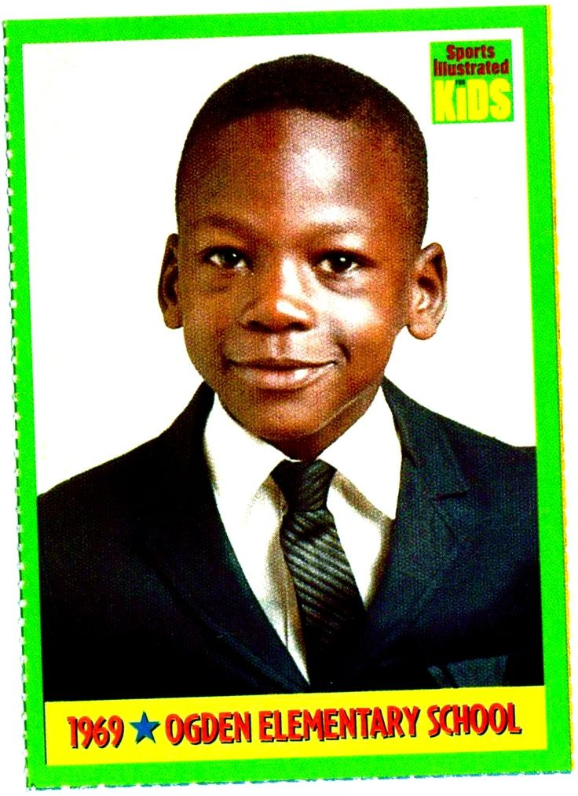
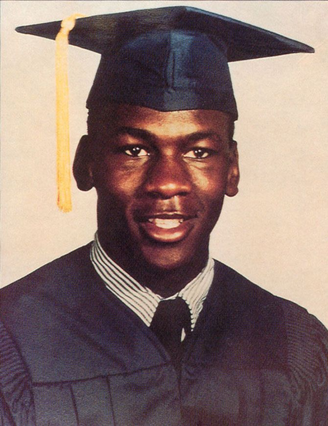
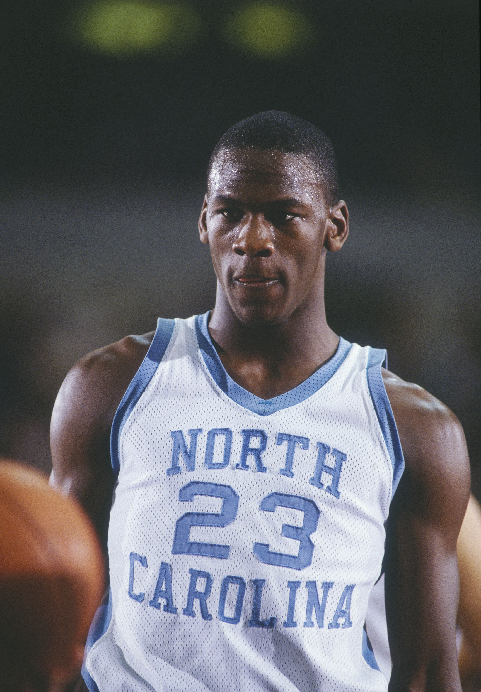
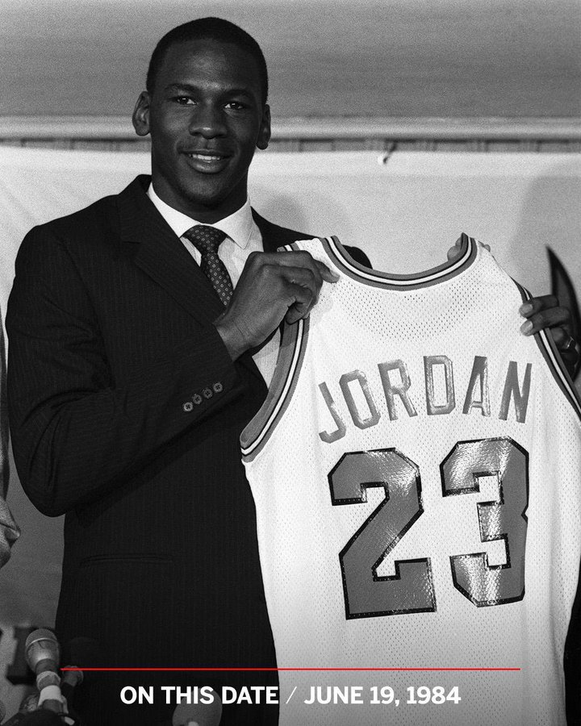
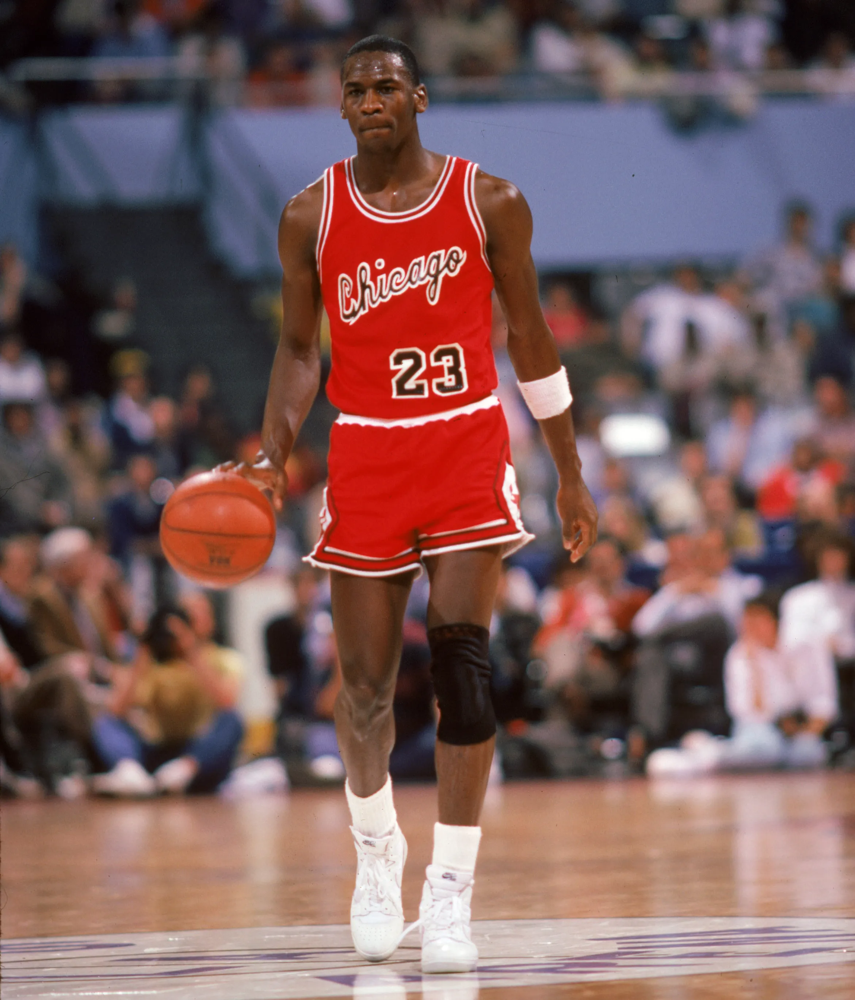
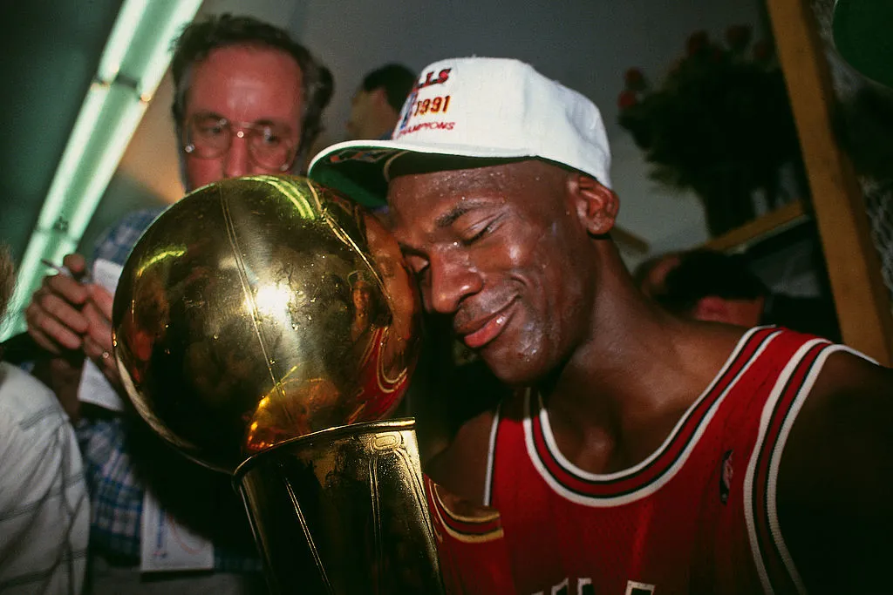
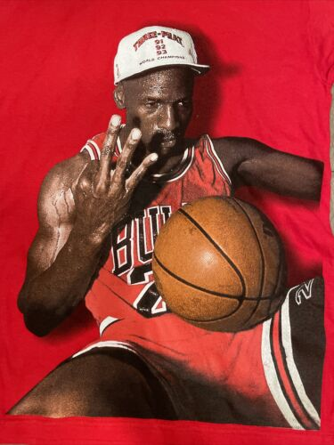
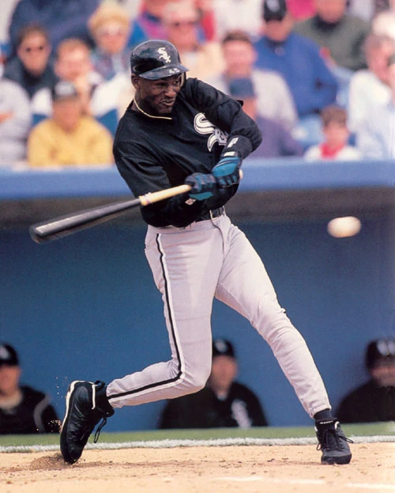
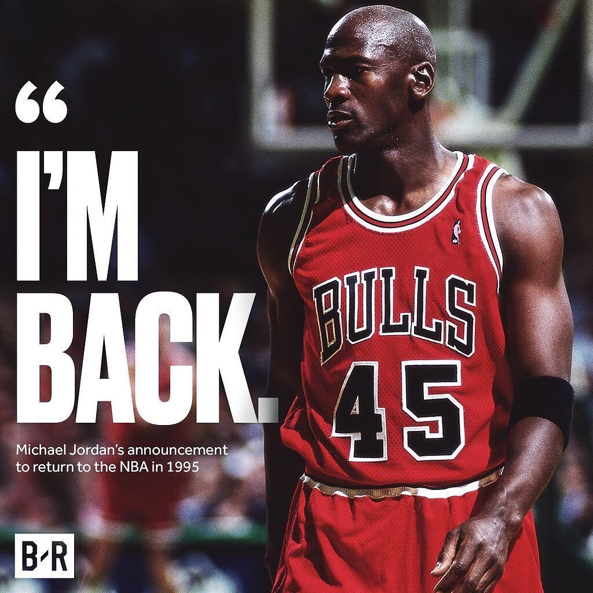
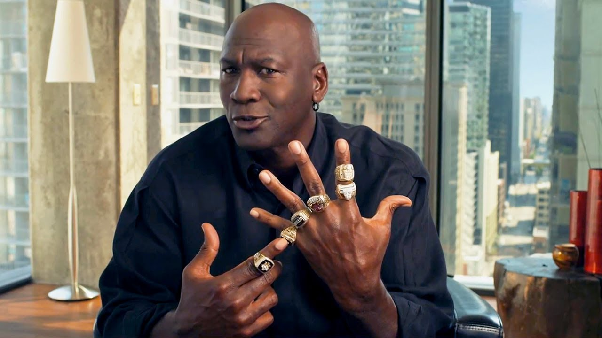
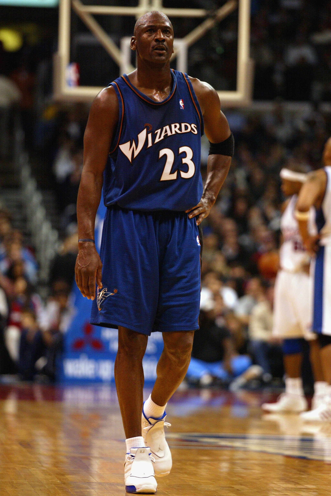
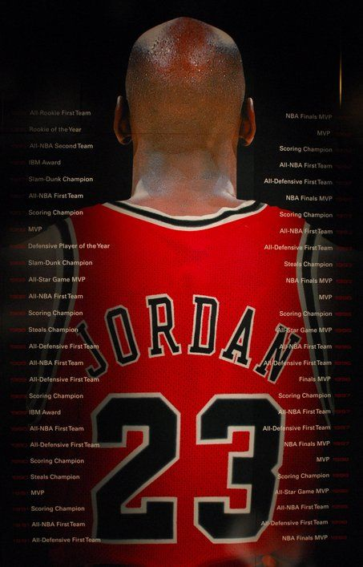
Michael Jordan Quote Generator
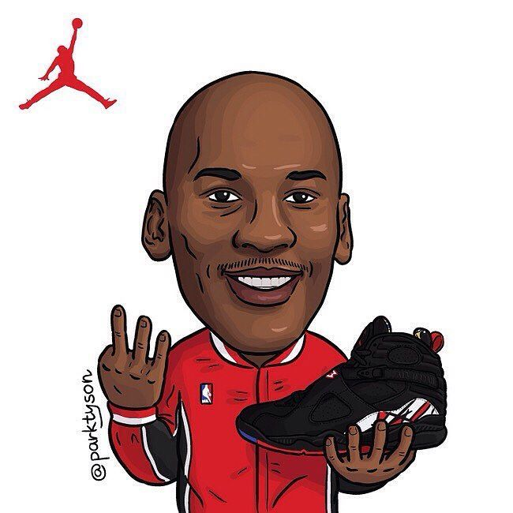